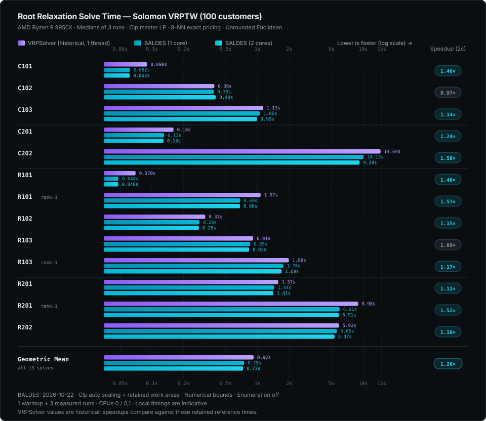

Root benchmarks
Documentation index · Build configuration
Root relaxations of Solomon VRPTW instances (100 customers), using split-depot graphs, unrounded Euclidean distances, NG neighbourhoods of the 8 nearest customers, the Clp master, and no reduced-cost fixing or enumeration. Times are the solvers' own root timers, reported as medians of three runs on an AMD Ryzen 9 9950X.
The chart retains the historical VRPSolver one-thread measurements and refreshes both BALDES series on October 22, 2026. BALDES uses automatic Clp scaling, retained work areas and numerical bounds, with optional SIMD disabled. Its forward/backward exact pricing uses two threads; one-core and two-core runs are pinned to CPU 0 and CPUs 0/1 respectively (different physical cores). One warmup precedes three measured runs per case/core configuration, alternating core configurations. The new times are local, indicative measurements; the displayed speedups compare against historical reference values rather than a fresh paired reference run.

On C101–C103, C201, C202 and R102, rank-one separation finds no violated cut, so those runs equal the ones without cuts.
Results (October 22, 2026)
| Workload | One core | Two cores |
|---|---|---|
| C101 | 0.0619 s | 0.0617 s |
| C102 | 0.3855 s | 0.4030 s |
| C103 | 1.0566 s | 0.9907 s |
| C201 | 0.1302 s | 0.1288 s |
| C202 | 10.1278 s | 9.2877 s |
| R101 | 0.0482 s | 0.0481 s |
| R101-rank1 | 0.6875 s | 0.6832 s |
| R102 | 0.2823 s | 0.2786 s |
| R103 | 0.8537 s | 0.8335 s |
| R103-rank1 | 1.7568 s | 1.6915 s |
| R201 | 1.4384 s | 1.4128 s |
| R201-rank1 | 6.0068 s | 5.9097 s |
| R202 | 5.6531 s | 5.3728 s |
| Geometric mean, all 13 | 0.7476 s | 0.7311 s |
All 104 warmup and measured runs reported root Optimal termination, with
consistent LP values across repetitions and core configurations. R101-rank1
now generates 216 cuts and reaches LP 1640.1181773, compared with 215 cuts and
LP 1641.5089808 in the October 20 batch. Its timing therefore includes a
changed cut workload; it is not a matched-work performance comparison.
The other 12 LP values match that batch within 1e-5.
Raw results and the runner are retained locally in
results/chart-refresh-cpu01-20261022/.
Root Optimal describes termination of the LP relaxation; these measurements
are not integer routing solve times. The IPM backend is not represented in this
chart. The SVG metadata records the executable hash, settings and full-precision
medians.
Run the same configuration
Build the CLI with the Clp backend, then run from the repository root:
cargo build --release --features clp
OMP_NUM_THREADS=1 OPENBLAS_NUM_THREADS=1 MKL_NUM_THREADS=1 taskset -c 0,1 \
./target/release/baldes solve instances/Solomon/R201.txt --customers 100 \
--master clp --reference-ng --ng 8 --rounding none --no-enumeration \
--bound-mode numerical --time 240 --json /tmp/r201-root.json
Add --rank1 for a rank-one workload. Use taskset -c 0 for the one-core
configuration. taskset is Linux-specific; select equivalent CPU affinity on
other platforms. Run one warmup followed by three measured runs and report the
median seconds field from the JSON output.
Use the same instance, options, CPU placement and build features when comparing runs. Other hardware, background work, LP backends, rounding conventions and cut settings can produce different times. See the CLI guide for controls and result fields.